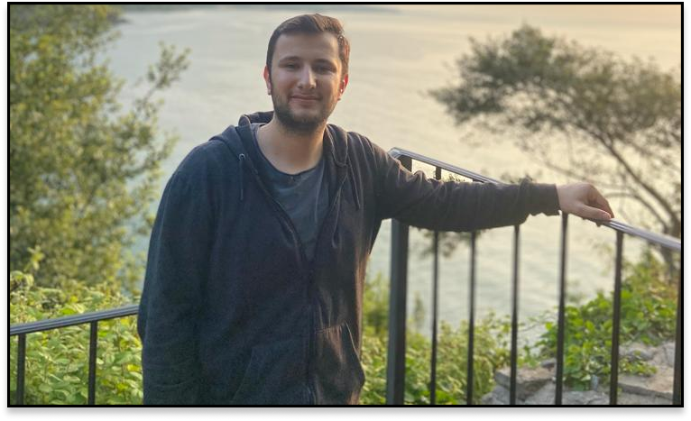

Özgeçmişim
Ben Yasin Alkan. 20.02.2003 tarihinde Malatya'da doğdum. İlk 2 yaşımı Malatya'da kaldıkten sonra ailemin işi dolayısı ile Tekirdağ Çerkezköy İlçesine taşındaık. İki kardeşiz ve ablam 24 yaşında. Eğitim hayatıma 7 yaşında 75. Yıl İlkokulu'nda başladım ve ardından Mevlana Ortaokulu'nda okullarımı sürdürdüm. Lise eğitimimi Halit Narin Mesleki ve Teknik Anadolu Lisesi'nde Bilişim Teknolojileri Veri Tabanı dalından başarıyla tamamladım. Şu an Düzce Üniversitesi'nde Bilgisayar Programcılığı okuyorum.
Hedeflerim, Düzce Üniversitesi'ndeki eğitim sırasında kendimi daha da geliştirme ve alanımda uzmanlaşmak. İş dünyasında başarılı bir kariyer hedefi ve projelerinde yer alan teknoloji alanında katkı sağlamayı amaçlıyorum.
